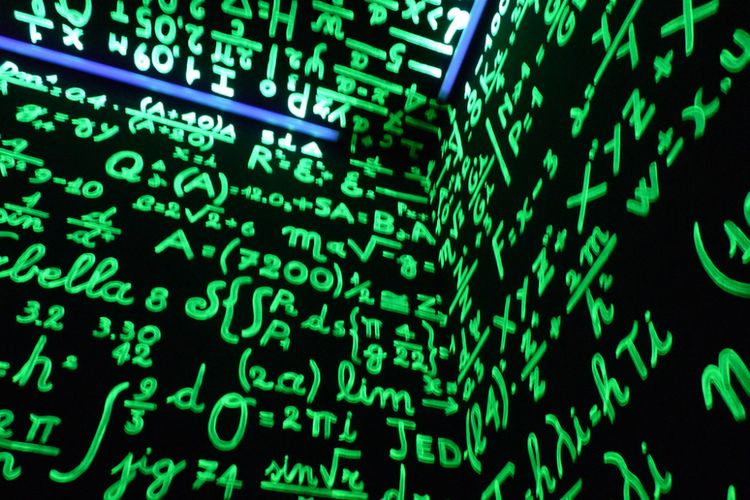

Nostalgia Babak Belur Belajar Matematika
Kompas.com - 17/11/2020, 08:46 WIB
Editor Heru Margianto

SEBAGAI hiburan pada masa PSBB transisi Corona, saya bernostalgia tentang babak-belur belajar matematika.
Bagi yang tidak butuh hiburan silakan berhenti baca sampai di sini saja. Apabila isi naskah ini membosankan maka tidak menjadi tanggung jawab redaksi Kompas.com mau pun penulis namun sepenuhnya tanggung-jawab pembaca.
Babak Belur
Sejak masa kanak-kanak, memang otak saya sudah babak-belur dalam mempelajari apa yang disebut sebagai matematika!
Meski pertanyaan saya tentang “kenapa” tidak sudi dijawab oleh bu guru namun saya tetap patuh untuk menghafal bahwa 2+2=4.
Kemudian saya juga manut ketika bu guru bilang bahwa ternyata 2X2=4 meski sebenarnya diam-diam heran tanpa berani terang-terangan mengaku heran kepada bu guru mengenai jika 2+2=4 yang terbukti sama tapi serupa dengan 2X2=4 lalu buat apa repot bikin tanda plus yang beda dari tanda kali padahal 2x2 mau pun 2+2 toh hasilnya sama-sama sama-dengan 4!
Pasti Gus Dur nyeletuk ”Gitu aja kok repot!”.
Saya lanjut mantuk-mantuk saja ketika bu guru lanjut mengajari saya bahwa 2-2=0 sebab bisa saya buktikan secara nyata dengan meletakkan dua bola bekel di atas meja lalu saya ambil dua bola bekel tersebut maka di atas meja tidak ada bola bekel yang disepakati para matematikawan bahwa tidak ada berarti NIHIL maka disebut sebagai NOL alias 0.
Ternyata 0 berbahaya menimbulkan masalah terbukti menurut bu guru 1+0=1 tetapi sungguh mengejutkan bahwa ternyata 1X0=0!
Mungkin karena akal saya tidak terlalu sehat maka sulit masuk ke akal saya bahwa sesuatu angka jika ditambah nol maka sang angka tetap bertahan sebagai dirinya.
Namun sungguh suatu misteri di ambang takhayul bahwa jika sang angka yang sama dikali nol maka sang angka malih-wujud ikut-ikutan menjadi nol.
Tentu saja saya tidak berani tanya kenapa kepada bu guru yang sudah cukup murka ketika saya tanya kenapa 2+2=4. Maka terpaksa saya menyimpan pertanyaan kenapa 1X0 jawabannya harus dogmatis 0 mungkin sampai akhir zaman tanpa terjawab.
Minus
Masalah makin rumit ketika pelajaran matematika mulai merambah ke wilayah angka minus yang konon berarti lebih kecil dari 0 di mana saya sengaja mengabaikan pertanyaan bagaimana bisa ada angka yang konon lebih kecil dari 0 yang lebih kecil dari angka terkecil yaitu 1.
Sementara pada kenyataan bangunan bertingkat tidak ada lantai 0 namun makin tidak ada lantai -1. Juga tidak kamar hotel bernomor 0 apalagi bernomor -1 kecuali ada pemilik hotel yang sangat kurang kerjaan sehingga ingin menggugurkan hipotesa saya bahwa tidak ada kamar hotel bernomor 0 apalagi -1!
Mari kita kembali ke kebabak-beluran saya belajar matematika dengan lanjut bernostalgia bu guru mengajari saya bahwa 2X0=0 maka saya langsung mengacungkan tangan untuk dengan bangga menyatakan “Berarti 0:0=2 !”.
Saya sangat yakin saya pasti benar berdasar analogika aljabarika apabila a dikali b=c berarti c dibagi b=a!
Lagi-lagi saya babak-belur sebab harus salah akibat logika aritmatikal bu guru beda dari logika swasembada saya sendiri.
Menurut logika bu guru berdasar konspirasi para mahamatematikawan yang dogmatis karena atau maka tidak boleh diganggu gugat secara take-it-or-leave-it hukumnya wajib saya terima secara ikhlas mau pun tidak ikhlas bahwa 0 dilarang keras digunakan untuk membagi angka apa pun !
Akibat sebenarnya saya tidak ikhlas maka barusan saya coba menggunakan kalkulator pada hape saya untuk menghitung 2:0=?.
Naga-naganya hape saya ikut terlibat dalam persekongkolan para mahamatematikawan untuk kejam mendiskriminasi 0 sehingga 0 dilarang membagi angka apa pun, terbukti hape saya menyamadengankan 2:0 sebagai error!